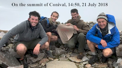
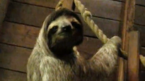

| Department of Biology, Geology and
Environmental Science |
| Seismic Arrival-Time Calculator A web app that calculates arrival times of seismic signals at a seismic station based on The TauP Toolkit (Crotwell et al., 1999, SRL 70, 154-160) Photo Galleries Desert SW, 2019 Images from our 2019 field trip (GEOL 4960) to the Basin and Range and the Colorado Plateau (AZ, CA, NV, UT)  Scotland, 2018 Images from our 2018 field trip (GEOL 4960) to Scotland  Spain, 2016 Images and videos of our 2016 field trip (GEOL 4960) to Spain with Miriam Barquero-Molina and her students from Mizzou  Wyoming Images from my visits to Branson Field Lab (Mizzou Field Camp), near Lander Wyoming  Costa Rica, 2015 Images from our 2015 field trip (GEOL 4960) to Costa Rica  Desert SW, 2014 Images from our 2014 field trip (GEOL 4960) to the Basin and Range and the Colorado Plateau (AZ, CA, NV, UT)  Costa Rica, 2013 Images from our 2013 field trip (GEOL 4960) to Costa Rica  Desert SW, 2012 6-minute video from our 2012 field trip (GEOL 4960) to the Basin and Range and the Colorado Plateau (AZ, CA, NV, UT)  Costa Rica, 2011 Images from our 2011 field trip (GEOL 4960) to Costa Rica  Desert SW, 2010 6-minute video from our 2010 field trip (GEOL 4960) to the Basin and Range and the Colorado Plateau (AZ, CA, NV, UT)  Costa Rica, 2009 Images from our 2009 field trip (GEOL 4960) to Costa Rica  Desert SW, 2008 6-minute video from our 2008 field trip (GEOL 4960) to the Basin and Range and the Colorado Plateau (AZ, CA, NV, UT) Costa Rica, 2007 Images from our 2007 field trip (GEOL 4960) to Costa Rica  Desert SW, 2006 6-minute video from our 2006 field trip (GEOL 4960) to the Basin and Range and the Colorado Plateau (AZ, CA, NV, UT) UTC Links UTC Home Page Department of Biology, Geology and Environmental Science Geologic Organizations American Geological Institute American Geophysical Union Geological Society of America Visit my alma maters University of North Carolina University of New Hampshire Miscellaneous Mount Washington, NH Mies World Headquarters |
Contact Information Department of Biology, Geology and Environmental Science, MC 2653 Education
Teaching I routinely teach the following courses:
Selected Publications and Recent Abstracts Mies, J. W., 2020, Preliminary analysis of hurricane Dorian's microseisms from the Little Bahama Bank through Onslow Bay, North Carolina, with comparisons to hurricanes Matthew and Florence, Geol. Soc. Am. Abs. with Prog. v. 52, No. 2, doi: 10.1130/abs/2020SE-345358. Hayes, J. A. (student) and Mies, J. W., 2019, A tale of two hurricanes: the peculiar microseisms of Matthew and Florence in Onslow Bay, North Carolina, Geol. Soc. Am. Abs. with Prog. v. 51, n. 3. Adair, W. A. (student), Beitel, H. R. (student), Hamid, Z. A. (student), Hossain, A. A. K. M. and Mies, J. W., 2018, Exploring the potential of remote sensing and GIS for geological mapping of Woodall Shoals, GA-SC, Geol. Soc. Am. Abs. with Prog. v. 50, No. 3, doi: 10.1130/abs/2018SE-312634. Beitel, H. R. (student), Churnet, H. G., Hossain, A. A. K. M. and Mies, J. W., 2018, Characterization of metamorphic zones in the Tennessee Blue Ridge using GIS and digital image processing, Geol. Soc. Am. Abs. with Prog. v. 50, No. 3, doi: 10.1130/abs/2018SE-312476. Mies, J. W., 2017, Hurricane Matthew's microseismic impression on Chattanooga, Geol. Soc. Am. Abs. with Prog. v. 49, n. 3. Mies, J. W., Brock-Hon, A. L., Churnet, H. G., Holmes, A. E., and Williams, W. K., 2016, The curricular benefits of a seismometer in UTC's geology program, Geol. Soc. Am. Abs. with Prog. v. 48, n. 3. Mies, J. W., Holmes, A. E., and Churnet, H. G., 2014, The Costa Rican field experience at UTC: 20 years in the making. Geol. Soc. Am. Abs. with Prog. v. 46, n. 6, p. 47. Howard, C. W. (student), Mies, J. W., Bodkin, T. E., and Brackett, D. G., 2011, Bentonite-controlled deformation of Middle Ordovician limestone at Chickamauga Dam, Chattanooga, Tennessee. Geol. Soc. Am. Abs. with Prog. v. 43, n. 5, p. 99. Bodkin, T. E., and Mies, J. W., 2008, X-ray diffraction (XRD) analysis of human cremains and concrete. American Academy of Forensic Science 60th Anniversary Scientific Meeting, February 18-23, 2008, Washington, DC. Mies, J. W. 1998. A geomechanical model for postorogenic fold-axis-parallel extension and its control on cross-fold joints. Geol. Soc. Am. Abs. with Prog. v. 30, n. 7, p. 62. Mies, J. W. 1996. Automated digital compilation of structural symbols. Journal of Geological Education v. 44, p. 539-548. Mies, J. W. 1995. Simple methods for rapid determination of lattice-preferred orientation in two dimensions. Journal of Geological Education v. 43, p. 6-10. Mies, J. W. 1993. Structural analysis of sheath folds in the Sylacauga Marble Group, Talladega slate belt, southern Appalachians. Journal of Structural Geology v.15, n. 8, p. 983-993. Mies, J. W. & Steltenpohl, M. G. 1993. Microstructures and quartz crystallographic fabric in the Hollis Quartzite, Pine Mountain window, Lee County, Alabama. Alabama Geological Survey Circular 172, Tuscaloosa, 43 p. Mies, J. W. 1991. Planar dispersion of folds in ductile shear zones and kinematic interpretation of fold hinge girdles. Journal of Structural Geology v. 13, n. 3, p. 281-29. Personal Interests When I'm not at work or in the field, I enjoy sailing (Lightning), hiking, working on the house or in the yard, or tinkering with my vintage sports car ('67 Sunbeam Alpine). Videos Click on image to view video
|